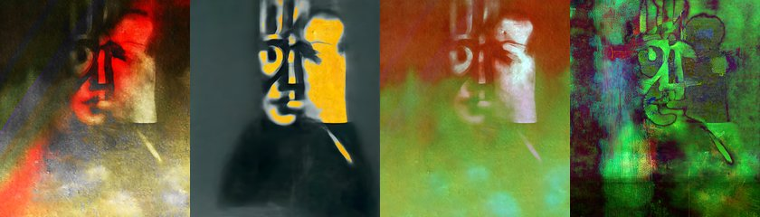

← Async Art — living works · all collections
by Hulki Okan Tabak · Async Art Master #9904 · four-phase · time rule: UTC
Updates four times a day to reflect sunrise / day / sunset / night cycles.

Sunrise 06:00–06:59 · Day 07:00–17:59 · Sunset 18:00–18:59 · Night 19:00–05:59 (UTC)
The full-size files live on IPFS; each is linked on three public gateways, in the order to try them (gateway.pinata.cloud, ipfs.io, dweb.link). Every line says what our own check found: 5 we keep this file pinned, 1 our own copy, pinned here and verified on upload.
QmPdLt3pKYQLXt… gateway.pinata.cloud · ipfs.io · dweb.link — we keep this file pinned, checked 2026-09-23 09:13QmPfA11n59tf47… gateway.pinata.cloud · ipfs.io · dweb.link — we keep this file pinned, checked 2026-09-23 09:13QmRijR1FrACzbz… gateway.pinata.cloud · ipfs.io · dweb.link — we keep this file pinned, checked 2026-09-23 09:13QmRvY5PvwTmdnj… gateway.pinata.cloud · ipfs.io · dweb.link — we keep this file pinned, checked 2026-09-23 09:13bafybeib72uuev… gateway.pinata.cloud · ipfs.io · dweb.link — our own copy, pinned here and verified on upload, checked 2026-09-22QmPRNF2pCvXuq2… gateway.pinata.cloud · ipfs.io · dweb.link — we keep this file pinned, checked 2026-09-23 09:13QmPfA11n59tf47… gateway.pinata.cloud · ipfs.io · dweb.link — we keep this file pinned, checked 2026-09-23 09:13QmPfA11n59tf47… gateway.pinata.cloud · ipfs.io · dweb.link — we keep this file pinned, checked 2026-09-23 09:13QmRvY5PvwTmdnj… gateway.pinata.cloud · ipfs.io · dweb.link — we keep this file pinned, checked 2026-09-23 09:13QmPdLt3pKYQLXt… gateway.pinata.cloud · ipfs.io · dweb.link — we keep this file pinned, checked 2026-09-23 09:13QmRijR1FrACzbz… gateway.pinata.cloud · ipfs.io · dweb.link — we keep this file pinned, checked 2026-09-23 09:13"In the United terminal in Chicago at five on a Friday afternoon The sky is breaking with rain and wind and all the flights Are delayed forever. We will never get to where we are going And there’s no way back to where we’ve been. The sun and the moon have disappeared to an island far from anywhere. Everybody has a heartache — " ---from Everybody Has a Heartache: A Blues by Joy Harjo ... Surreal Storyteller is stranded in his own stories. He can not get to where he is going as that place is constructed via the story he tells. Lacking the necessary audience, Surreal Storyteller is stuck in a semi-permanent existence of de-construction and re-construction amidst his stories. ... Surreal…
async.art · OpenSea · Etherscan
Generated archive pages. Content identifiers point to the public IPFS network.